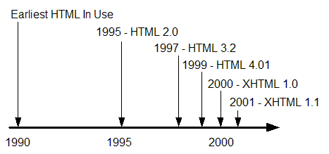

HTML stands for Hypertext Markup Language, and it is the most widely used language to write Web Pages. Hypertext refers to the way in which Web pages (HTML documents) are linked together. Thus the link available on a webpage are called Hypertext. As its name suggests, HTML is a Markup Language which means you use HTML to simply "mark up" a text document with tags that tell a Web browser how to structure it to display. Originally, HTML was developed with the intent of defining the structure of documents like headings, paragraphs, lists, and so forth to facilitate the sharing of scientific information between researchers. Now, HTML is being widely used to format web pages with the help of different tags available in HTML language.
HyperText Markup Language (HTML) is the standard markup language for creating web pages and web applications. With Cascading Style Sheets (CSS), and JavaScript, it forms a triad of cornerstone technologies for the World Wide Web. Web browsers receive HTML documents from a webserver or from local storage and render them into multimedia web pages. HTML describes the structure of a web page semantically and originally included cues for the appearance of the document. HTML elements are the building blocks of HTML pages. With HTML constructs, images and other objects, such as interactive forms, may be embedded into the rendered page. It provides a means to create structured documents by denoting structural semantics for text such as headings, paragraphs, lists, links, quotes and other items. HTML elements are delineated by tags, written using angle brackets. Browsers do not display the HTML tags, but use them to interpret the content of the page. HTML can embed programs written in a scripting language such as JavaScript which affect the behavior and content of web pages. Inclusion of CSS defines the look and layout of content. The World Wide Web Consortium (W3C), maintainer of both the HTML and the CSS standards, has encouraged the use of CSS over explicit presentational HTML since 1997.
In 1980, physicist Tim Berners Lee, a contractor at CERN, proposed and prototyped ENQUIRE, a system for CERN researchers to use and share documents. In 1989, BernersLee wrote a memo proposing an Internet based hypertext system. Berners Lee specified HTML and wrote the browser and server software in late 1990. That year, BernersLee and CERN data systems engineer Robert Cailliau collaborated on a joint request for funding, but the project was not formally adopted by CERN. In his personal notes from 1990 he listed "some of the many areas in which hypertext is used" and put an encyclopedia first. The first publicly available description of HTML was a document called "HTML Tags", first mentioned on the Internet by Tim Berners Lee in late 1991. It describes 18 elements comprising the initial, relatively simple design of HTML. Except for the hyperlink tag, these were strongly influenced by SGMLguid, an inhouse Standard Generalized Markup Language (SGML) based documentation format at CERN. Eleven of these elements still exist in HTML 4. HTML is a markup language that web browsers use to interpret and compose text, images, and other material into visual or audible web pages. Default characteristics for every item of HTML markup are defined in the browser, and these characteristics can be altered or enhanced by the web page designer's additional use of CSS. Many of the text elements are found in the 1988 ISO technical report TR 9537 Techniques for using SGML, which in turn covers the features of early text formatting languages such as that used by the RUNOFF command developed in the early 1960s for the CTSS (Compatible Time Sharing System) operating system: these formatting commands were derived from the commands used by typesetters to manually format documents. However, the SGML concept of generalized markup is based on elements (nested annotated ranges with attributes) rather than merely print effects, with also the separation of structure and markup; HTML has been progressively moved in this direction with CSS.
 Back to table